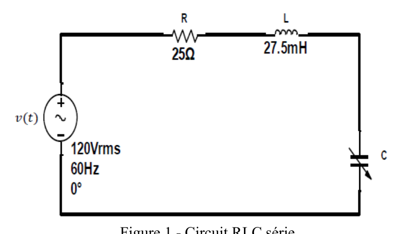
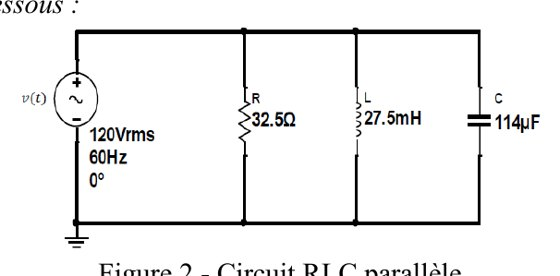
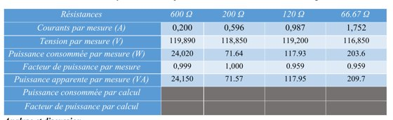
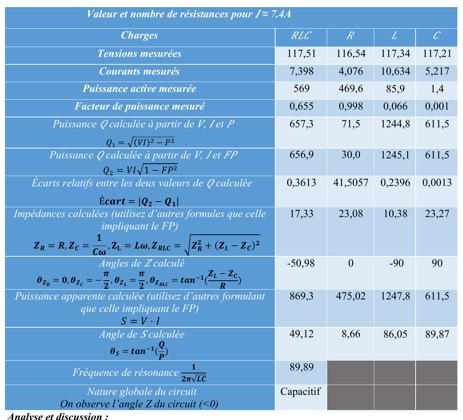

Electrotechnics | Circuit response
Single-phase RLC measurements
Series and parallel RLC behavior compared through diagrams and lab measurements.
- Status
- Measurement study
- Focus
- Energy
- Tools and methods
- Electrotechnics / Resonance / Measurements

Objective
Relate sinusoidal circuit behavior, resonance and power quantities to experimental measurements.
Engineering work
- Prepare series and parallel RLC circuit calculations.
- Compare the response of resistive and reactive loads.
- Record voltage, current and power quantities.
- Discuss discrepancies between theoretical and experimental values.
Outcome
The team report contains circuit diagrams and measurement tables. The gallery extracts these figures while omitting the repeated team-name headers.
Scope and limits
The table entries are preserved academic observations, not certified instrument results. The original experiment has not been repeated for this page.
Archive gallery 3 items






Documentation
ELE3400 laboratory 1 team report, selected circuit and measurement excerpts.